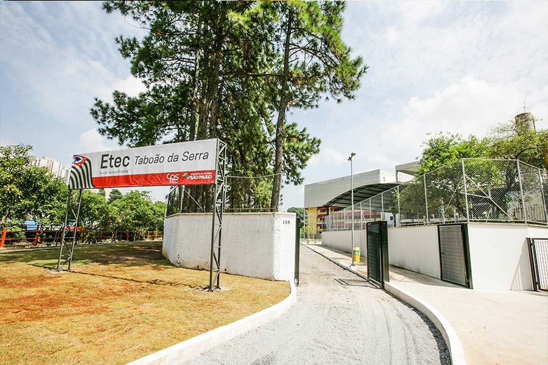

Etec de Taboão da Serra
Já passou da hora de você conhecer a nossa Etec
A Etec de Taboão da Serra iniciou suas atividades em fevereiro de 2018, como classe descentralizada da Etec de Embu. Os meses iniciais da escola contou com um coordenador de classe descentralizada e dois coordenadores de curso. O quadro de professores foi montado a partir dos pedidos de ampliação de carga horária de professores da sede e de outras unidades do Centro Paula Souza.
Em 21 de março de 2018, o então Governador do Estado de São Paulo GERALDO ALCKMIN, cria a Etec de Taboão da Serra através do DECRETO N° 63.293. À vista disso, o coordenador de classe descentralizada é designado Diretor de Escola Técnica, o CPS disponibiliza dois empregos públicos (diretor de serviço e assistente administrativo), dois projetos HAE (diretor de serviço e parcerias escola-empresa) e maior quantidade de HAE – Hora Aula Atividade Específicas – para as funções de Coordenação Pedagógica, Orientação Educacional e Coordenação de Laboratório. Novos processos são implantados e a escola impulsionada.
O prédio que abriga a escola foi construído a partir da parceria com a Secretaria Estadual de Educação. Sendo que a Fundação para o Desenvolvimento da Educação (FDE) ficou responsável pela obra. Atualmente, a Etec conta com uma infraestrutura que dispõe de 6 salas administrativas (secretaria, almoxarifado, núcleo pedagógico, coordenação de cursos e relações institucionais, diretoria de serviços, direção), 7 salas de aula, 4 laboratórios equipados com computadores ou notebooks, sala de professores, biblioteca, quadra, cozinha, refeitório, copa, pátio, depósito de limpeza, vestiário para funcionários, banheiros em todos os andares, portaria e estacionamento. Apesar da obra ainda não estar concluída, a escola opera aproveitando o melhor que a infraestrutura atual pode oferecer.
A Etec é muito bem acolhida na região. Os pais e alunos apoiam as ações da escola e acreditam na proposta do ensino técnico. Além disso, contamos com a colaboração essencial da Prefeitura Municipal com as demandas da instituição.